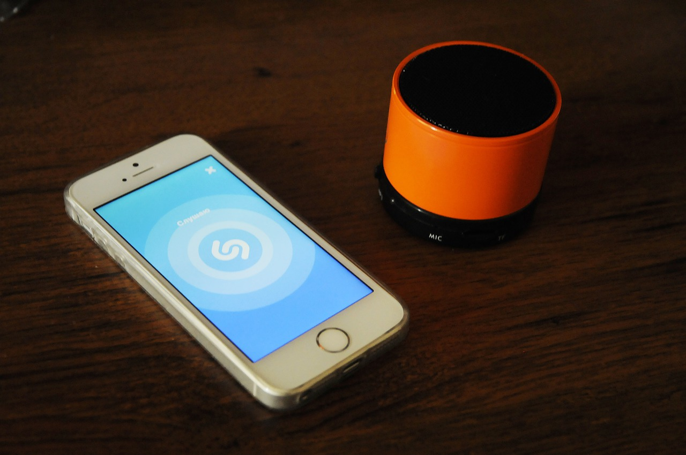
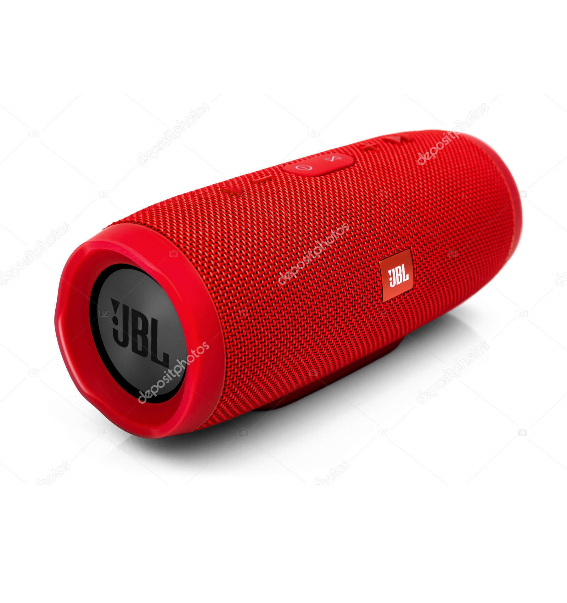

В ТОП лучших портативных колонок 2021 года, я включил лучшие блютуз колонки по сочетанию цены и качества, от 100$ до 540$. Лучшая портативная колонка в 2021 году должна иметь 5 главных критериев качества: Автономность беспроводной колонки ⏳: от 10 часов и более, это норма. Мощность и громкость хорошей портативной колонки 📣: 5-10 Вт колонки для дома 🏡, 10-20 Вт для улицы и пикников ⛺ , 50-100 Вт — лучшие колонки для вечеринок 🕺. Качество звука и цена блютуз колонки 🔊: в идеале, в колонке должен быть сбалансированный бас который не перекрывает другие частоты. СЧ и ВЧ опустим, это не та категория устройств. Они просто должны быть 🙂 и не забиваться низкими. Ощутимый уровень качества звука идет от 30$. В этом рейтинге лучшие портативные колонки колонки от 100$, по звуку они лучшие из лучших. Масса и габариты ⚖️. Условно разделим беспроводные колонки на: мини-колонки, средний размер и большие. Большие от 3 до 16 кг — не очень удобны для переноски, но имеют большой запас громкости и лучшее качество звука. Средний размер от 1 до 3 кг — удобные для переноски и сбалансированные по звуку и громкости. Мини-колонки до 1 кг — самые удобные для переноски, помещаются в карман и стоят недорого, но маленький размер влечет за собой умеренную громкость и частичные потери в качестве звука. В нашем топе портативных колонок, большие и средние варианты, маленькие блютуз колонки мы рассмотрели отдельно. Удобство управления ⏯️ . Базовые клавиши на корпусе хорошей портативной колонки: плей/пауза, трек вперед/назад, громкость выше/ниже, вкл/выкл и сопряжение по Bluetooth. Кнопки очень упрощают жизнь, в противном случае придется использовать управление с телефона, а это не очень удобно.
Компактная и влагозащищенная акустическая система с беспроводным подключением, функцией универсальной мобильной батареи и встроенным литий-ионным аккумулятором высокой емкости. Позиционируется как продукт верхней части средней ценовой категории 2019-го модельного года. От популярной модели JBL Charge 3 отличается повышенной выходной мощность (до 30 Вт) и увеличенной емкостью интегрированного аккумулятора (7500 мАч), который теперь способен обеспечивать до 20 ч автономной работы при среднем уровне громкости. Мобильная акустическая система JBL Charge 4 способна уверенно озвучивать помещения площадью до 25 кв.м. и поможет организовать небольшую дискотеку под открытым небом. Для подключения устройства к источнику звука применяется энергоэффективный беспроводный интерфейс bluetooth
 Назад